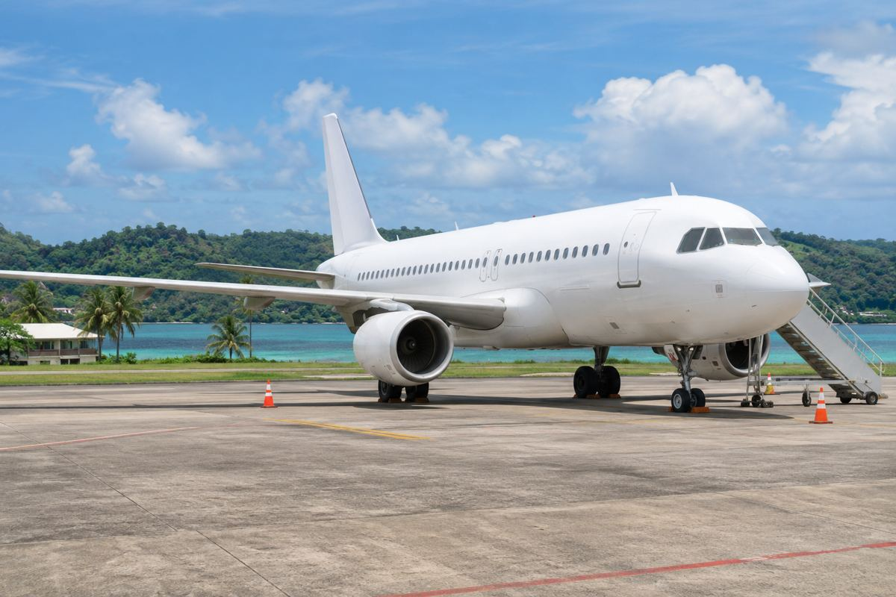

国際線ネットワーク / EXPLAINED
American、マイアミ–カパイシアン再開を発表
11月1日再開発表。地域100目的地の範囲と到着空港を確認する。

Americanは11月1日、マイアミ–カパイシアン毎日直行便の再開を発表し、初便を記念した。737を使う。ハイチ北部のCAPは首都ポルトープランスとは別の都市で、国名だけでなく到着空港が重要だ。
地域ネットワークの1都市
カリブ・中南米で100番目という説明は全世界100目的地ではない。分母を地域と読み、米国内からマイアミ経由の旅にも関係する。
90超の米国接続を紹介するが、全出発地で同日短時間や一冊の券を保証しない。別購入のマイアミ便に自動で接続保護は付かず、予約、荷物、再予約条件を確認する。地図より実旅程が重要だ。
初便の乗員と常時提供
ハイチ出身でクレオール語を使う初便乗員を紹介したが、全便で同構成を約束しない。地域とのつながりの事例でありサービス要求は案内で確認する。本稿は同乗取材や架空インタビューをしていない。
737だけで座席、足元、荷物は決まらず運賃別条件が残る。到着後の移動も別計画だ。再開は地上交通と入国の保証ではなく、航空会社と当局の案内は役割が異なる。
確認できる変化はCAP再開とマイアミ網拡大。他の冬季・施設計画は別日程で、全部完成とは限らない。11月1日、販売日、CAPコードを基準に読み、運航継続や接続品質は後の資料で評価したい。毎日という頻度は特定日の空席や最終運賃を示さない。